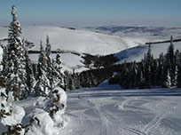
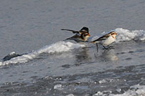

Town Information
Articles
Update: More road closures in Eastern Idaho, but Treasure Valley-area routes reopen
The Idaho Transportation Department’s road report map has been so speckled
with closures and warnings in recent days that one Boisean compared it to a Jackson Pollock painting. By noon on Thursday, there were nine road closures
east of Twin Falls, but some Treasure Valley-area roads were in better shape, according to the agency’s 511 road report.
“In my three years at ITD,
this is pretty close to the worst I’ve ever seen things across the state,” said Jake Melder, a spokesman for the agency.
See idahostatesman.com for full article.
The Arctic birds have arrived in eastern Idaho
One was appeared to be skating while the other appeared to be applauding the others tricks – two Snow buntings fresh from the
Arctic Circle had found their way to Idaho. At Toomey Pond at Camas National Wildlife Refuge, my friend, Wylie and I watched as the two birds danced and skidded across the frozen surface as if they were practicing
their skating moves.
It was a rare sighting for us but the weather forecast for storms and cold weather over Thanksgiving had me wondering when we might see the winter birds show up. Most of the time we see the Snow buntings show
up as a tag-along with Horned larks and Lapland longspurs. On rare occasions we will observe groups of 10 to 20 buntings in the Ashton/Chester area during the winter; but never two of them alone.
See eastidahonews.com for full article.